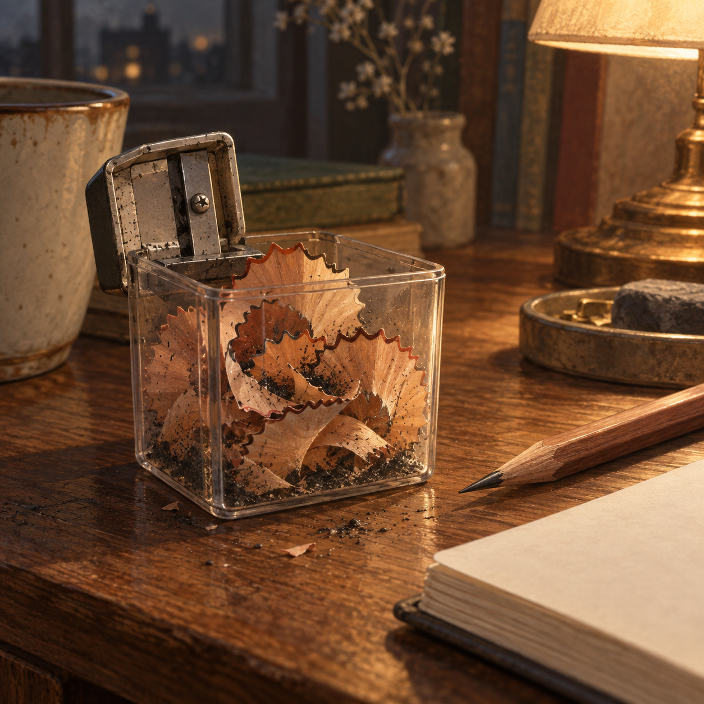

나무 부스러기가 가르쳐 준 속도

연필깎이 통 안에 얇은 나무 부스러기가 저녁 등빛을 받아 둥글게 말려 있다. 막 깎은 연필 끝에는 검은 흑연이 드러나고, 손가락에는 나무 냄새가 희미하게 밴다. 문장을 쓰기 전의 책상은 뜻보다 먼저 촉감으로 가득해진다.
연필을 너무 급히 돌리면 심이 안에서 부러진다. 단단한 생각도 서둘러 꺼내려 하면 제 모양을 잃는다는 듯하다. 한 번 멈추고 통 속을 비우고 다시 천천히 돌릴 때, 뾰족함은 힘이 아니라 알맞은 속도에서 생긴다. 글을 쓰는 동안 우리는 자꾸 완성된 문장만 바라본다. 그러나 한 줄 곁에는 잘려 나간 표현과 접어 둔 망설임이 부스러기처럼 쌓인다. 버린 말들이 있었기에 남은 말의 윤곽도 또렷해진다. 저녁의 연필깎이는 작은 실패를 숨기지 않는다. 나는 연필을 쥐고 종이 위에 짧은 선을 긋는다. 매끈하지 않아도 앞으로 나아가는 선, 오늘의 문장은 그 정도의 속도로 시작된다.
공식·확인 가능한 채널
확인되지 않은 신작·수상·인터뷰 정보는 임의로 기재하지 않습니다.